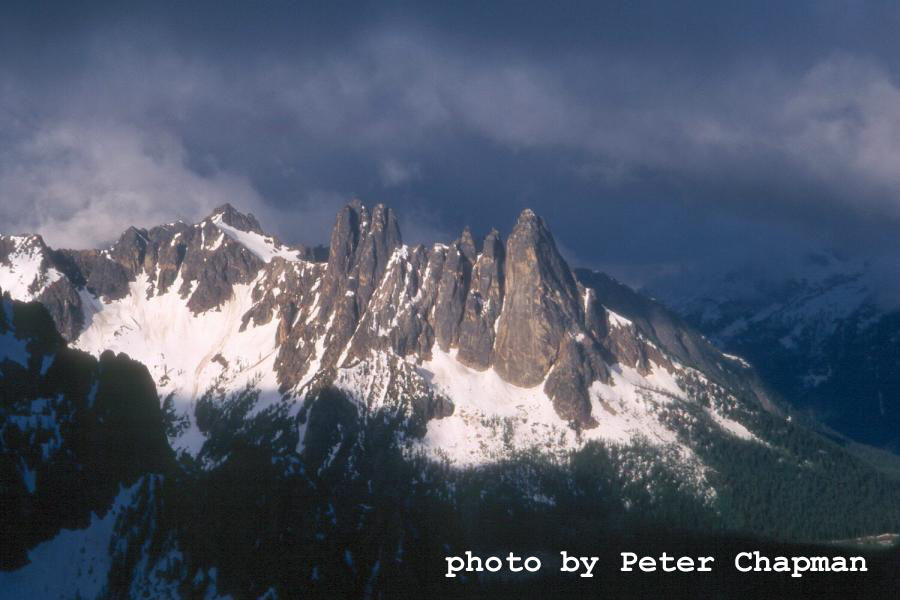
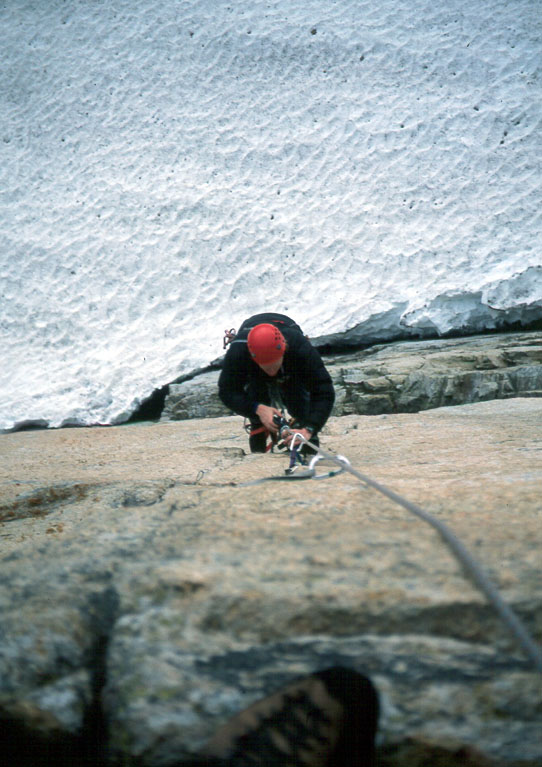
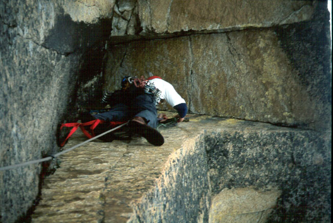
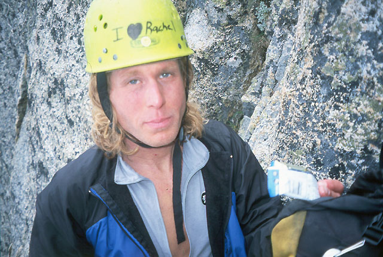
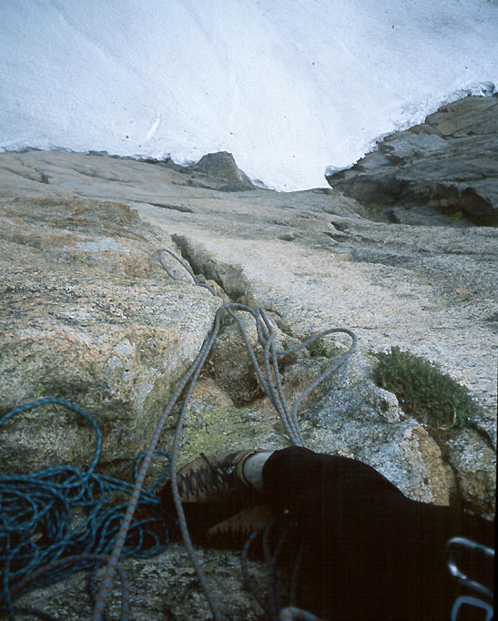

Liberty Bell, Liberty Crack
- Liberty Crack (A3, 5.9)
- June, 2002
Dan and I drove up Saturday night, slept by the truck, and got an early start Sunday on Liberty Crack. Fumbling around in the dark forest, we eventually made our way to snowfields below the wall. It was very impressive! I’d never aid climbed more than two pitches, so the wall had an air of seriousness. I was reminded than one shouldn’t look at such blank faces for very long, lest intimidation set in!





We brought one pack, which Dan had rigged for hauling. We had to stuff in rock shoes, food, water, and an ice axe for the descent. Teeter-tottering on the edge of the snowfield, we awkwardly got our gear together, and scrambled up a ways to set a belay in the rock. Dan took the first lead, having to traverse right to enter the crack, and finding difficult moves right from the start. “This is definitely A3!” he said. He overcame various conundrums with fiddling, nerves and luck. I was eager to get off the ground and join Dan on the wall.
Soon enough, he reached a bolted belay station just below the great roof, the “Lithuanian Lip” named for Alex Bertulius. It was my lead, and I nervously prepared to climb. I’d never climbed such a huge overhang before, and the increasing clouds and (yes) snow flurries added to the commitment. The great void of air beneath us seemed to pull at me as I moved up to a sling and then a bolt near the roof. I found a hole that would hold a Yellow Alien, tested it, then shifted my weight onto the piece. I remember looking down at Dan as I twisted in the air. He was wearing his black down jacket, which became speckled with snowflakes. Another move brought me to a titanium piton at the edge of the roof. Then I had some difficulties escaping back onto the steep face. I didn’t have any gear that would fit in the very thin crack. “Remember the hooks!” said Dan. Oh yes. These “hooks” are not traditional rock protection in the sense that you put them in the rock and they stay there. Oh no. A hook is merely a piece of metal that sits on a lip of rock as long as your weight is on it. It will casually fall off without the stabilizing weight. Of course, microscopic variations in the shape of the platform you are trusting could also cause the hook to fly off before your horrified eyes!
But one does what one must. In fact, I felt quite secure with the variation of hook I had selected - a Leeper Cam hook. A few hooks and placements later, I heaved above the abyss. Dan saw my feet disappear over the lip and then knew me only by the slow movement of the rope.
At the end of the pitch I felt like I’d been climbing for hours. I clipped into sturdy bolts, and set up a hauling system with my ascenders for the pack with gear and water. As I hauled, I looked around amazed by this new vertical world, and my excitement grew. My meager free climbing abilities had never allowed me to enter this environment of hold-less walls. Nevertheless, I felt the same kind of satisfaction at the end of the pitch. The moments of pride came from the occasional gamble (heart in throat) on insecure hooks, or particularly “intelligent” placements. The snow stopped and the weather seemed to clear a bit as Dan efficiently jumared the fixed line.
Pitch three belonged to Dan, and we were both excited about it. It is infamous for it’s insecure gear placements and ratty-looking fixed gear hammered frantically into the rock. A particular kind of aid climbing gear called a “copperhead” is made of soft metal that must be “pasted” with a hammer into a shallow seam of rock. When placed, it looks like a silver piece of gum, and holds a little bit better than the gum might. Occasionally a too-heavily-laden person attempts to climb the route and rips a copperhead out. We didn’t have any with us, so if it wasn’t in place, we were done for the day.
Dan moved quickly up. He’s a pretty experienced aid climber, and had suggested that he lead the 4 aid pitches, then we swap leads on the rest of the climb. I had hemmed and hawed about this idea, somewhat worried than some free pitches might prove too difficult for me, and I would end up feeling short of leads at the end of the day. On the other hand, if I proved to be a slow aid climber, I could ruin our chances by causing us to wallow on the lower pitches for too long. My only aid experience consisted of enjoyable mornings or afternoons with Peter Chapman at Index. On this day I moved as quickly as I could, and I think it met Dan’s threshold for reasonable speed.
As he climbed, Dan remarked on the relative mankiness of the gear. Eventually he had to make two hook placements in a row. I braced for the impact! But he moved through with no problems and shouted “Off belay!” As I jumared past and cleaned the gear, I was amazed by the museum of metal scraps he had clipped to. In one case, the rock seemed to have grown around a blob of metal with a frayed cable to clip to! “Nice lead, Dan!” I marveled, happy to rely on his ingenuity to end up perched beside him.
Pitch 4 is sometimes climbed free at 5.10, but I aided it. This went quickly, as the angle was not as steep and I could reach very high for placements. We only used two aiders instead of three or four, so high steps were kind of awkward on the harder pitches.
As we began putting the aid climbing gear away and getting out the rock shoes, we had to confront something we’d been putting off – the weather. The clouds swirled around us, spitting occasional rain. The rock had the greasy feeling it gets when damp but not soaked. We looked up at the chimneys and cracks that disappeared in the mist, and reflected that we didn’t have the promise of better weather in the forecast. There was little fuel for the optimist. My best endorsement was a rather lame “I’ll go on if you want to.” Dan certainly did, and began climbing in rock shoes. “S*#! this is hard,” he said, feet skittering on the greasy slabs. Now we were of one mind: it was a great aid climbing half-day, let’s go down.
The rappels went quickly, only gaining some complication just above the ground. Dan made a single rope rappel, but ended up stranded above the moat on slabs. I re-rigged for a double rope rappel, and we easily reached our starting point. Sigh. On the ground, looking up at the wall and our high point. Our greatest fear now was that the sun would come out.
But the gods showed kindness. We drove slowly away to the west where clouds stacked and wept. In the coming days I’d hatch crazy schemes to return during the week, breathing noisily into the phone on calls to Dan, but work and other concerns prevented it. Next year!
By the way, Peter and Kim Chapman were on Silver Star, and got a nice picture of Liberty Bell. I’ve looked for little specks on the wall, but either I can’t see that well or our presence was a ghostly one. Our two parties wondered about each other during the day.